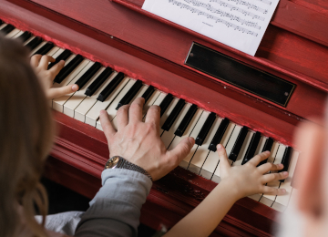

Rhythm Priming and Neuromodulation

Rhythmicity is a fundamental property of temporal information, which has been proposed as a primary source of connection between music and language [1, 2]. This link has led to growing interest in rhythmic priming paradigm for enhancing immediate language processing [3, 4] as well as rhythm-based musical training for developmental language disorders [5, 6]. However, there remains much to be understood regarding behavioral and neural mechanisms underlying the benefit of rhythmic interventions in speech and language functions [7]. This research aims to explore the rhythm processing mechanisms driving speech and language improvement using neuroimaging and neuromodulation methods including fMRI, EEG, and tACS.
Associated Publications
1. Lee, Y. S., Ahn, S., Holt, R. F., & Schellenberg, E. G. (2020). Rhythm and syntax processing in school-age children. Developmental Psychology, 56(9), 1632. http://dx.doi.org/10.1037/dev0000969
2. Heard, M., & Lee, Y.-S. (2020). Shared neural resources of rhythm and syntax: An ALE Meta-Analysis. Neuropsychologia, 107284. https://doi.org/10.1016/j.neuropsychologia.2019.107284
3. Chern, A., Tillmann, B., Vaughan, C., & Gordon, R. L. (2018). New evidence of a rhythmic priming effect that enhances grammaticality judgments in children. Journal of experimental child psychology, 173, 371-379. https://doi.org/10.1016/j.jecp.2018.04.007
4. Canette, L. H., Bedoin, N., Lalitte, P., Bigand, E., & Tillmann, B. (2019). The Regularity of Rhythmic Primes Influences Syntax Processing in Adults. Auditory Perception & Cognition, 2(3), 163-179. https://doi.org/10.1080/25742442.2020.1752080
5. Flaugnacco, E., Lopez, L., Terribili, C., Montico, M., Zoia, S., & Schön, D. (2015). Music training increases phonological awareness and reading skills in developmental dyslexia: a randomized control trial. PloS one, 10(9), e0138715. https://doi.org/10.1371/journal.pone.0138715
6. Habib, M., Lardy, C., Desiles, T., Commeiras, C., Chobert, J., & Besson, M. (2016). Music and dyslexia: a new musical training method to improve reading and related disorders. Frontiers in psychology, 7, 26. https://doi.org/10.3389/fpsyg.2016.00026
7. Schön, D., & Tillmann, B. (2015). Short-and long-term rhythmic interventions: Perspectives for language rehabilitation. Annals of the New York Academy of Sciences, 1337(1), 32-39.https://dx.doi.org/10.1111/nyas.12635